屁话 在面对前端加密http参数的时候，如果需要解密，以前我一直是两步：
首先在js代码中找到加密逻辑，这一步一般比较快，通过搜索加密关键字比如text，data，或者encode，encrypt等，然后全部打上断点，一步一步分析。如果没找到关键字就麻烦一点，只能硬着头皮看。
第二步一般是比较蛋疼的，在找到加密逻辑后，就需要在本地还原js代码以实现在bp或者python中调用，碍于js代码的层层嵌套结构，这一步往往花费了最多的时间和精力
但是如果把断点停在调用加密函数前，在浏览器的console中就可以运行加密代码。如下
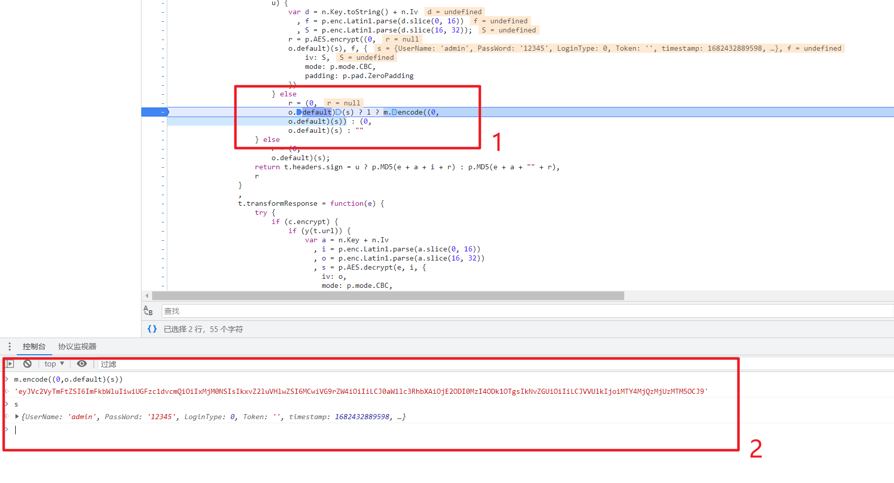
1处是加密参数的代码。2处是我在console中进行调用，可以看到完成了加密，但是加密代码 m.encode((0,o.default)(s)) 只能在断点停在这一步时才能运行。所以现在需要做的就是把浏览器停在这里，然后借助cdp远程运行代码。
操作 （前提：需要先手动找到加解密代码并且在浏览器中测试成功）
1.启动浏览器，配置断点 需要一个chrome浏览器，找到文件位置，使用以下命令启动
1 \chrome.exe --remote-debugging-port=9222 --user-data-dir="C:\Users\This_is_Y\Desktop\test" --remote-allow-origins=http://127.0.0.1:9222 --ignore-certificate-errors
–remote-debugging-port ： 启远程调试，端口9222和我们之前转发出来的端口一致
–user-data-dir ：设置独立的文件保存目录，建议一个网站一个目录
–remote-allow-origins ：允许远程调试
–ignore-certificate-errors ：强制忽略掉证书错误
启动浏览器后，在设置中开启并打开protocol monitor，
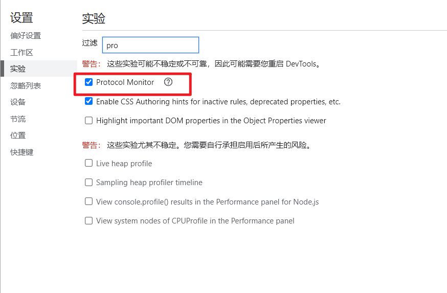
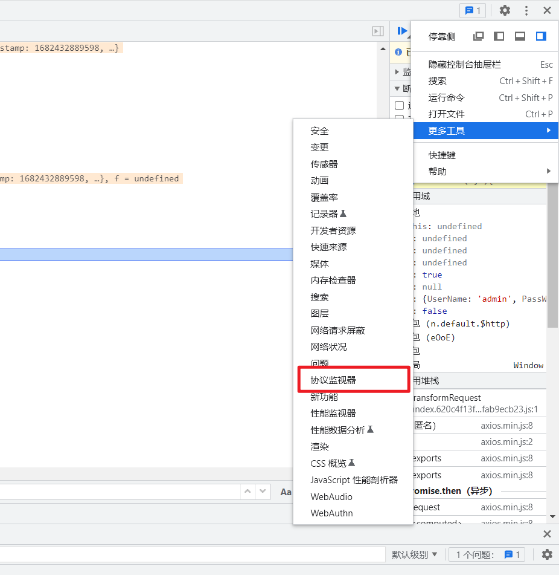
2.拿到webSocketDebuggerUrl和callFrameId 在确认protocol monitor启动后，访问网站，下好断点，然后让流程停在断点前。可以先在浏览器中测试，看看加解密代码能不能正常运行，如图，
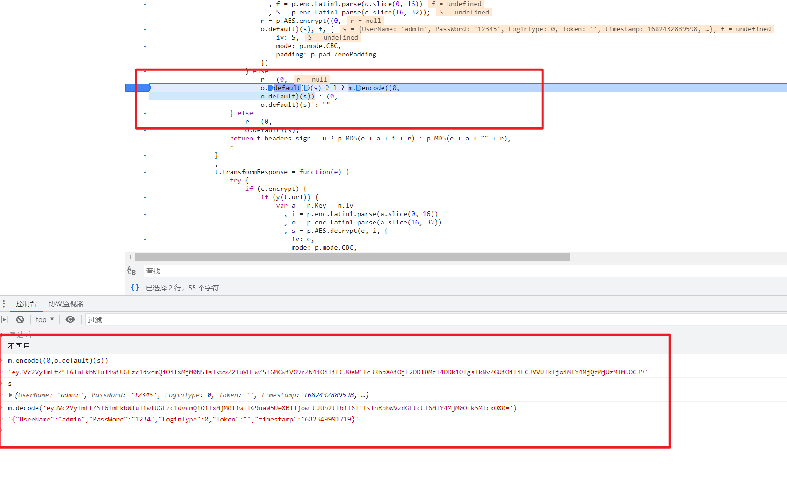
随后跳到协议监视器来，过滤Debugger.evaluateOnCallFrame，拿到参数callFrameId
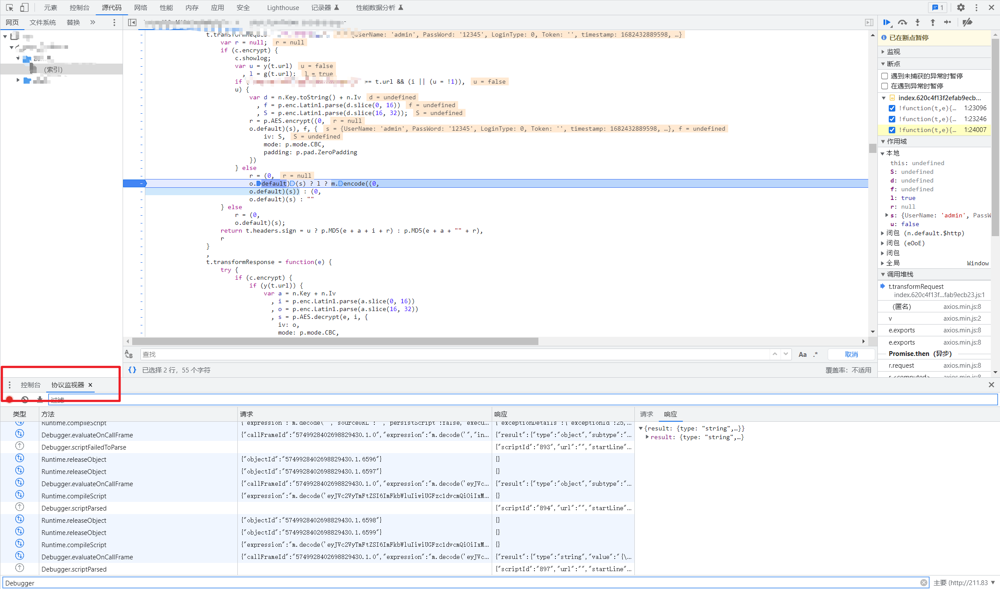
然后打开http://127.0.0.1:9222/json，找到目标网站的webSocketDebuggerUrl
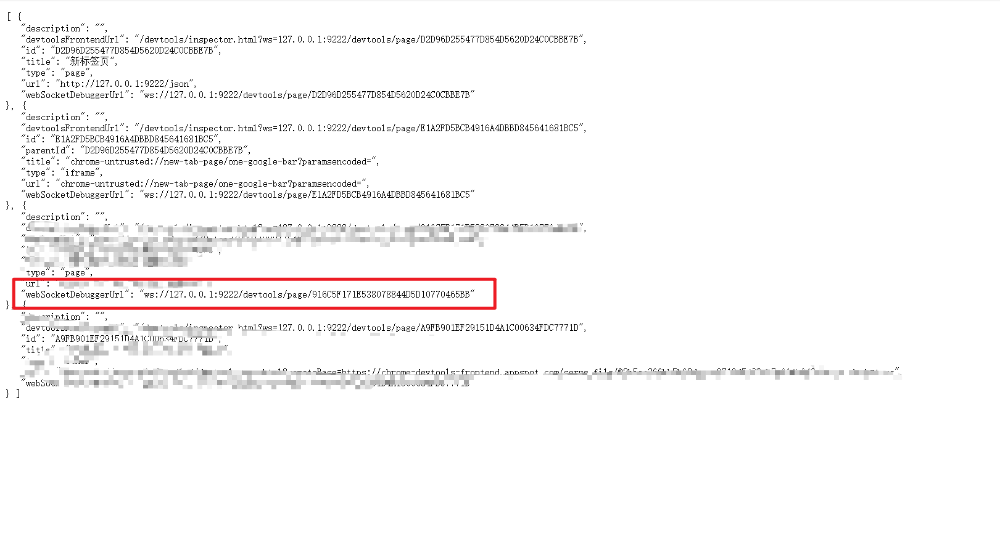
3.测试代码 python代码如下：
1 2 3 4 5 6 7 8 9 10 11 12 13 14 15 16 17 18 19 20 21 22 23 24 25 26 27 28 29 30 31 32 33 34 35 36 37 38 39 40 41 import jsonimport requestsimport websocketdef main (callFrameId,js_code ): ws_url = "ws://127.0.0.1:9222/devtools/page/916C5F171E538078844D5D10770465BB" conn = websocket.create_connection(ws_url,header={"User-Agent" : "this_is_y" }) false = False true = True request_id = 1 method = "Debugger.evaluateOnCallFrame" param = {"callFrameId" :callFrameId,"expression" :js_code,"objectGroup" :"console" ,"includeCommandLineAPI" :true,"silent" :false,"returnByValue" :false,"generatePreview" :true} command = {'method' : method, 'id' : request_id, 'params' : param} conn.send(json.dumps(command)) result = json.loads(conn.recv()) print (result) if __name__ == '__main__' : js_code = "m.decode('eyJVc2VyTmFtZSI6ImFkbWluIiwiUGFzc1dvcmQiOiIxMjM0IiwiTG9naW5UeXBlIjowLCJUb2tlbiI6IiIsInRpbWVzdGFtcCI6MTY4MjM0OTk5MTcxOX0=')" callFrameId = "5749928402698829430.1.0" main(callFrameId,js_code)
这里有一些错误消息：可供参考
4.mitmproxy代码 worker.py（还未完善）
1 2 3 4 5 6 7 8 9 10 11 12 13 14 15 16 17 18 19 20 21 22 23 24 25 26 27 28 29 30 31 32 33 34 35 36 37 38 39 40 41 42 43 44 45 46 47 48 49 50 51 52 53 54 55 56 57 58 59 60 61 62 63 64 65 66 67 68 69 70 71 72 73 74 75 76 77 78 79 80 81 82 83 84 85 86 87 88 89 90 91 92 93 94 95 96 97 98 99 100 101 102 103 104 105 106 107 108 import mitmproxy.http from mitmproxy import ctx, http import json import websocket ws_url = "ws://127.0.0.1:9222/devtools/page/5CE4DFECA307706DCFFA590DCE41FA85" callFrameId = "-338402750453211968.1.0" count = 0 # error 消息： # {'code': -32000, 'message': 'Can only perform operation while paused.'} 断点没下好 # {'code': -32000, 'message': 'Cannot find context with specified id'} callFrameId可能有点问题 def main(ws_url,callFrameId,js_code): conn = websocket.create_connection(ws_url,header={"User-Agent": "this_is_y"}) false = False true = True request_id = 1 method = "Debugger.evaluateOnCallFrame" param = {"callFrameId":callFrameId,"expression":js_code,"objectGroup":"console","includeCommandLineAPI":true,"silent":false,"returnByValue":false,"generatePreview":true} command = {'method': method, 'id': request_id, 'params': param} # 发送命令 conn.send(json.dumps(command)) # 接受websocket的响应，并将字符串转换为 dict() result = json.loads(conn.recv()) # print("result:",result) return result def decrypt(ws_url,callFrameId,ctext): js_code = "m.decode('{}')".format(ctext) print("Js_Code:",js_code) return main(ws_url,callFrameId,js_code) def encrypt(ws_url,callFrameId,ptext): js_code = "m.encode('{}')".format(ptext) print("Js_Code:",js_code) return main(ws_url,callFrameId,js_code) class Worker: def __init__(self): self.num = 0 def request(self, flow: mitmproxy.http.HTTPFlow): if flow.request.host != "211.83.160.61": return print("Request >>>>>>>>>>>") print("body:",flow.request.method) print("body:",flow.request.path) print("body:",flow.request.get_text()) body = flow.request.get_text() if "{" in body and "}" in body: # 未加密的明文，需要对其加密 result = encrypt(ws_url,callFrameId,body) else: result = decrypt(ws_url,callFrameId,body) try: error = result['error'] print("error:",error) return except: pass v = result['result']['result']['value'] print("V:",self.num,v,type(v)) self.num += 1 flow.request.content = v.encode('utf-8') def response(self, flow: mitmproxy.http.HTTPFlow): if flow.request.host != "211.83.160.61": return print("Response >>>>>>>>>>>") print("body:",flow.response.get_text()) body = flow.response.get_text() result = decrypt(ws_url,callFrameId,body) try: error = result['error'] print("error:",error) return except: pass v = result['result']['result']['value'] print("V:",self.num,v,type(v)) self.num += 1 flow.response.content = v.encode('utf-8') addons = [ Worker() ]
使用该代码，配合mitmproxy的正向代理模式，
mitmweb -s .\3.py -p 8082 –mode regular
同时在User options -> UpStream Proxy Servers 中添加mitmproxy监听的8082端口
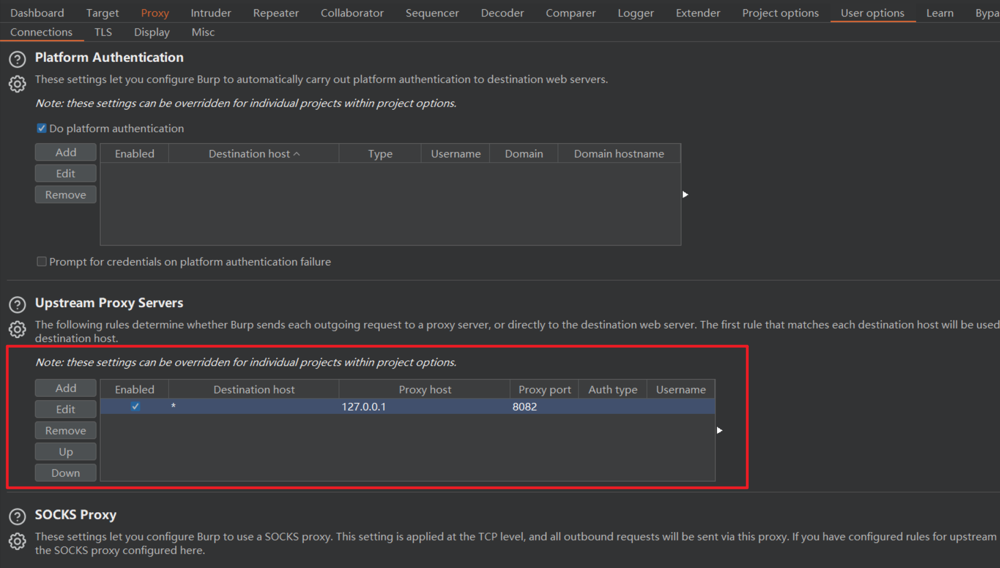
已经可以做到在burp-repeater中发送明文请求，自动解密返回
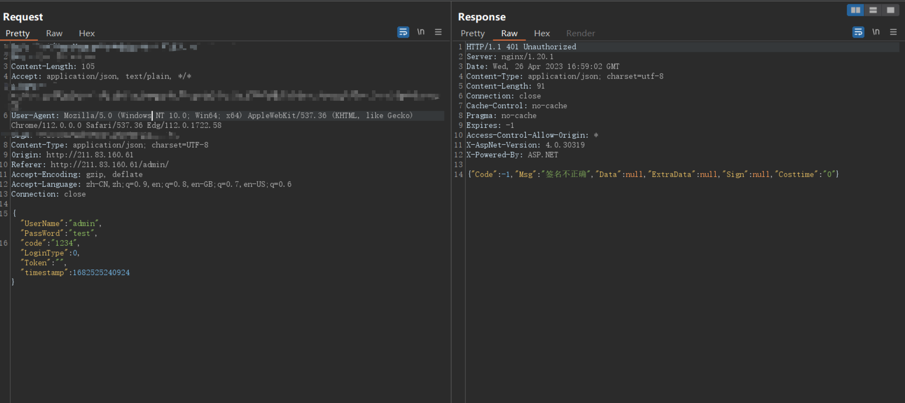
但是没法做到burp抓包自动解密，可以用mitm上游代理的方式转发数据包到burp，但是那样子burp不能发出包
最后还是放弃了用python结合 mitmproxy的方法，
理想状态
BURP开发 最好的还是写一个burp插件来完成这件事，所以我花了一个月的时间来写这个插件虽然每天就写半小时。最后简单完成了一个丑陋的的插件
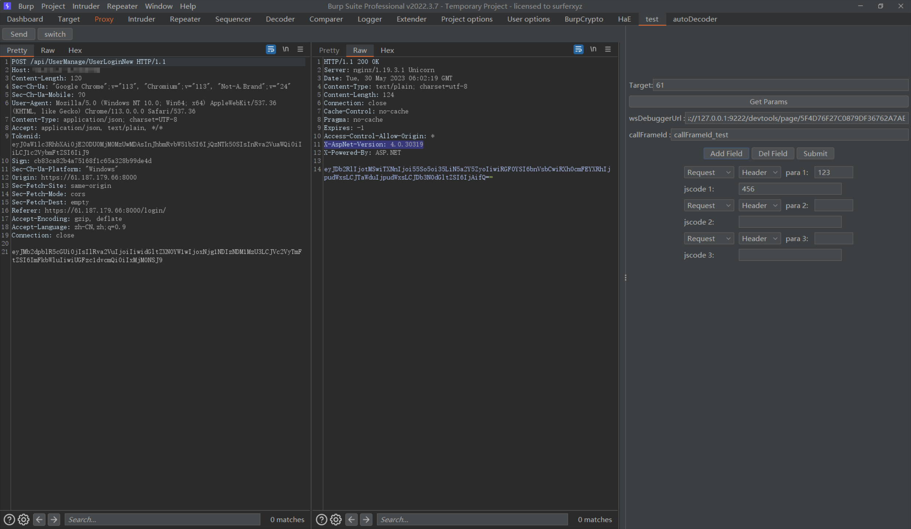
还顺便写了一个测试CDP的小工具
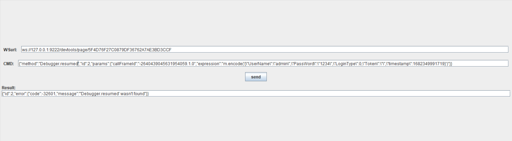
autoDecoder https://github.com/f0ng/autoDecoder
在朋友帮助下知道了这个插件，发现可以将cdp调用的过程打包为python的web接口，然后通过这个工具完成解密。
注意事项 1.Handshake status 403 Forbidden 这一步卡了我非常久，打算写细致一点。在运行别人的代码的时候，发现一直报错
1 websocket._exceptions.WebSocketBadStatusException: Handshake status 403 Forbidden
唯一一个有帮助的就是在**websocket.create_connection()前加上 websocket.enableTrace(True)**查看数据包细节。这引导我使用wireshark去抓包查看原始数据包是什么样子
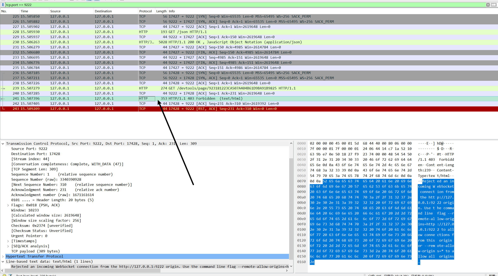
然后在wireshark中发现了这个。可以看到右边的提示信息
1 Rejected an incoming WebSocket connection from the http://127.0.0.1:9222 origin. Use the command line flag --remote-allow-origins=http://127.0.0.1:9222 to allow connections from this origin or --remote-allow-origins=* to allow all origins.
在简单查了点资料和测试下，我在浏览器启动的时候加上了**–remote-allow-origins=http://127.0.0.1:9222 ** 参数，才解决问题
2.callFrameId 在发送cdp命令的时候，需要用到callFrameId 参数，这个参数我还没找到怎么使用代码自动获取，先留个坑
参考 https://1oid.github.io/2023/02/15/frontend-encrypt-crack-cdp-debug-function-eval/ https://chromedevtools.github.io/devtools-protocol/tot/Debugger/ https://blog.csdn.net/freeking101/article/details/110213782